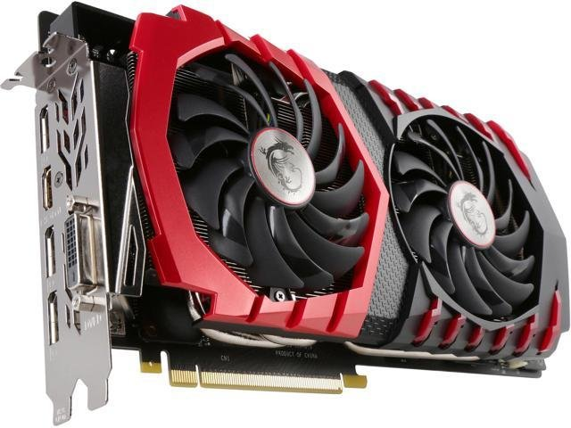

Grafické karty
Grafická karta je součást počítače, která se stará o zpracování grafiky a zobrazení obrazu na monitor. Hraje důležitou roli výkonu počítače, zejména při hrách a práci s grafikou.
Grafické karty se mohou lišit podle výkonu, velikosti paměti, ale také používané architektury a technologií.
Grafická karta (GPU – Graphics Processing Unit) má v počítači několik klíčových funkcí, které jsou klíčové pro zpracování grafiky a zajištění plynulého zobrazení na monitoru:
- Zpracování Grafiky:
- Zpracování grafických dat: Hlavní funkcí grafické karty je zpracování a renderování grafických dat, což zahrnuje obrazová data, textury, stíny a další grafické efekty. To je klíčové pro zobrazování grafických prvků ve hrách, aplikacích nebo videích.
- Paralelní Zpracování:
- Paralelní zpracování: Moderní grafické karty mají mnoho jader (CUDA jádra u NVIDIA, Stream procesory u AMD), což umožňuje paralelní zpracování dat. To je zejména důležité pro náročné grafické úlohy, jako jsou 3D renderování a simulace.
- Optimalizované Grafické Rozhraní:
- Optimalizované grafické rozhraní: Grafická karta obsahuje speciální instrukce a technologie pro efektivní zpracování grafických úloh. To zahrnuje shader modely, texturovací jednotky a další.
- Výpočty Všeobecného Využití (GPGPU):
- Výpočty všeobecného využití: GPU lze využít pro výpočty všeobecného využití (GPGPU), což znamená použití grafické karty pro některé nelineární výpočty mimo oblast grafiky. To je významné pro aplikace jako je vědecký výzkum nebo simulace.
- Ray Tracing a Umělá Inteligence:
- Ray tracing: Moderní grafické karty podporují technologie jako ray tracing, což umožňuje realističtější osvětlení a stíny ve hrách a grafických aplikacích.
- Umělá inteligence: Některé grafické karty obsahují jádra nebo akcelerátory pro umělou inteligenci, což je užitečné pro různé úlohy, včetně strojového učení.
- Video Dekódování a Kódování:
- Video dekódování: Grafické karty mají vestavěné dekodéry pro zpracování videa, což snižuje zátěž na procesoru.
Výběr grafické karty závisí na potřebách uživatele, jeho rozpočtu a preferencích v hrách nebo aplikacích.
Výrobci grafických karet
 grafické karty GeForce;
grafické karty GeForce;  grafické karty Radeon.
grafické karty Radeon.
Tito výrobci jsou nejoblíbenější, ostatní výrobci grafických karet používají čipy výše uvedených značek.
Při rozhodování o koupi grafické karty musíte pochopit, pro jaký účel je potřeba - pracovat s běžnou nebo 3D grafikou. Pokročilé grafické čipy mají 3D akceleraci.
Grafika může být
- Dvourozměrné (2D) - ploché obrázky, například ve Wordu, Excelu, Chrome a dalších základních programech. Integrovaná grafická karta je vhodná pro práci s jednoduchými programy, ale její možnosti nestačí pro Adobe Photoshop, Movie Maker a další výkonnější programy a hry.
- Trojrozměrné (3D) - trojrozměrné obrázky. Pro hráče, kteří rádi hrají 3D hry, je lepší pořídit si high-end nebo duální GPU. Ten se skládá ze 2 stejných GPU, které jsou propojeny rozhraními: Scalable Link Interface (SLI) - pro grafické karty NVIDIA; Crossfire - pro karty ATI.
Potřeba používat grafické karty vzniká v designových studiích, kde pracují s 3D grafikou, a proto využívají výkonný software.